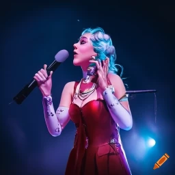
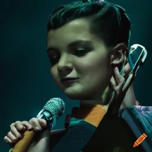
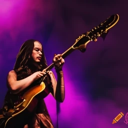
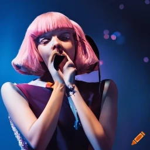
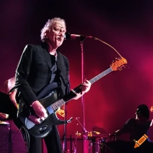

Disfruta de un fin de semana lleno de música y diversión.
Comprar entradasElectra Starlight es una artista electropop conocida por su estilo único y su voz seductora. Sus letras inteligentes y su habilidad para combinar ritmos pegadizos con elementos electrónicos la convierten en una verdadera sensación en el escenario. Electra es famosa por su energía enérgica y sus impresionantes performances visuales, que incluyen trajes futuristas y coreografías elaboradas.
The Velvet Souls es un grupo de música formado por cinco talentosos cantantes y músicos. Su sonido distintivo combina influencias del R&B clásico y el soul contemporáneo, creando una experiencia auditiva y emocionalmente cautivadora. Con armonías suaves y melodías soulful, The Velvet Souls tienen la habilidad de transportar a su audiencia a un viaje musical nostálgico con un toque moderno.
Luna Verde es una cantautora de folk alternativo que cautiva con su voz suave y melancólica. Sus letras poéticas y su habilidad para tocar múltiples instrumentos, como la guitarra acústica y el violín, crean una atmósfera íntima y emotiva. Con su estilo bohemio y letras introspectivas, Luna Verde se conecta profundamente con su audiencia, dejando una impresión duradera.
The Thunderbeats es una banda de rock & roll que hace vibrar los escenarios con su energía inigualable y su actitud rebelde. Sus riffs de guitarra poderosos, el bajo contundente y los solos de batería estruendosos forman el núcleo de su sonido explosivo. Con letras llenas de rebeldía y pasión, The Thunderbeats hacen que el público salte, grite y se entregue por completo.
Aurora Latina es una talentosa cantante y bailarina que fusiona ritmos latinos y africanos en su música. Su voz enérgica y su presencia magnética en el escenario encienden una chispa en el corazón de todos los espectadores. Con una banda que combina instrumentos tradicionales y modernos, Aurora Latina crea un ambiente festivo y contagioso que invita a la audiencia a moverse y celebrar la diversidad cultural.
| Día | Hora | Artista |
|---|---|---|
| Día 1 | 19:00 - 20:30 |

Electra Starlight |
Día 1 | 21:30 - 23:00 |

Luna Verde |
| Día 2 | 21:00 - 22:30 |

The Velvet Souls |
| Día 3 | 18:30 - 20:00 |

Aurora Latina |
| Día 3 | 21:30 - 23:00 |

The Thunderbeats |
En una noche llena de emociones, la reconocida estrella del pop internacional, Harmony, hizo una aparición sorpresa en el Festival de Música Épica para deleitar a sus fans. Con un set enérgico y cargado de hits, Harmony se adueñó del escenario principal, desatando la euforia entre la multitud. Los asistentes quedaron maravillados con su talento vocal, su coreografía impecable y su carisma deslumbrante. Sin duda, fue un momento inolvidable para los fanáticos del festival.
El Festival de Música Alternativa fue testigo de una actuación extraordinaria por parte de la nueva promesa del indie rock, The Midnight Haze. Con su sonido fresco y su actitud desenfadada, la banda cautivó a la audiencia con su música enérgica y letras conmovedoras. La combinación perfecta entre guitarras vibrantes y melodías adictivas llevó a los asistentes a un estado de éxtasis musical. The Midnight Haze demostró que son una fuerza imparable en la escena del rock independiente.
El Festival de Música Electrónica se convirtió en el epicentro de la innovación musical cuando el visionario DJ, Neonix, subió al escenario principal. Con una combinación única de géneros y una fusión de sonidos electrónicos vanguardistas, Neonix llevó al público a un viaje sónico sin precedentes. Su dominio de la mezcla en vivo y su habilidad para crear una atmósfera hipnótica mantuvieron a todos los asistentes inmersos en una experiencia de baile inigualable. Neonix dejó una marca indeleble en la historia del festival.
Bienvenidos al impresionante escenario del Festival de Música Épica. Ubicado en un entorno mágico y pintoresco, este lugar cautivará tus sentidos desde el momento en que pongas un pie en él.
El festival se encuentra en un vasto terreno rodeado por majestuosas montañas que se elevan hacia el cielo, ofreciendo un telón de fondo impresionante para las actuaciones musicales. El aire fresco y puro envuelve el lugar, creando una atmósfera revitalizante y energizante.
Un río serpenteante fluye cerca del área del festival, proporcionando un oasis de tranquilidad y añadiendo un toque natural a la experiencia. Los asistentes pueden disfrutar de momentos de relajación junto al agua, refrescarse en las áreas designadas para nadar o simplemente deleitarse con la vista y los sonidos serenos.
El escenario principal, imponente y deslumbrante, se encuentra en el corazón del festival. Está diseñado con tecnología de vanguardia y ofrece una calidad de sonido e iluminación excepcionales, creando un ambiente envolvente y mágico para las presentaciones de los artistas.
Además, el lugar cuenta con múltiples escenarios secundarios distribuidos estratégicamente, donde se llevan a cabo actuaciones simultáneas, brindando a los asistentes una amplia variedad de géneros musicales para disfrutar. Cada escenario está cuidadosamente diseñado para proporcionar una experiencia íntima y cercana con los artistas, permitiendo que la música resuene en cada fibra del ser.
En los alrededores, encontrarás áreas de descanso y espacios para socializar, donde los asistentes pueden disfrutar de deliciosas opciones gastronómicas que abarcan desde comida callejera hasta platos gourmet, así como una amplia selección de bebidas refrescantes.
Con su entorno natural impresionante, una acústica espectacular y una atmósfera llena de emociones, el lugar del Festival de Música Épica te invita a sumergirte en una experiencia musical única y dejarte llevar por la magia que solo la música en vivo puede ofrecer.